Công cụ hình thái học mức xám chủ yếu dùng để xử lý hình thái học mức xám cho ảnh đầu vào, hỗ trợ các phép toán hình thái học mức xám gồm giãn nở, co xói, mở, đóng, biến đổi Top-Hat trắng, biến đổi Top-Hat đen, gradient hình thái học, lọc trung vị.
Xử lý hình thái học mức xám cho ảnh đầu vào
Các phép toán hình thái học được công cụ hình thái học mức xám hỗ trợ chia thành 8 loại: giãn nở mức xám, co xói mức xám, mở mức xám, đóng mức xám, biến đổi Top-Hat trắng, biến đổi Top-Hat đen, gradient hình thái học, lọc trung vị.
Giãn nở và co xói:Giãn nở có thể mở rộng vùng sáng trong ảnh, thu nhỏ vùng tối trong ảnh; co xói có thể thu nhỏ vùng sáng trong ảnh, mở rộng vùng tối trong ảnh.
Mở và đóng:Mở là thực hiện co xói rồi giãn nở trên ảnh, có thể loại bỏ các chi tiết sáng hoặc vùng nhỏ sáng trong ảnh; đóng là thực hiện giãn nở rồi co xói trên ảnh, có thể loại bỏ các chi tiết tối hoặc vùng nhỏ tối trong ảnh.
Biến đổi Top-Hat trắng và đen:Biến đổi Top-Hat trắng là lấy ảnh gốc trừ đi ảnh sau phép mở, có thể tăng cường các chi tiết sáng có kích thước nhỏ hơn phần tử cấu trúc trong ảnh; biến đổi Top-Hat đen là lấy ảnh sau phép đóng trừ đi ảnh gốc, có thể tăng cường các chi tiết tối có kích thước nhỏ hơn phần tử cấu trúc trong ảnh.
Gradient hình thái học:Phép toán gradient hình thái học là lấy ảnh giãn nở trừ đi ảnh co xói, có thể giữ lại biên ảnh.
Lọc trung vị:Phép lọc trung vị thay thế mỗi pixel của ảnh bằng giá trị trung vị của các pixel trong vùng lân cận（vùng lấy pixel hiện tại làm tâm）, dùng để khử nhiễu ảnh, lọc thông thấp, v.v.
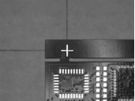
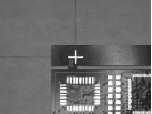
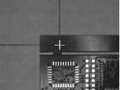
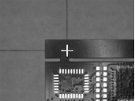
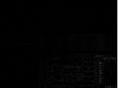
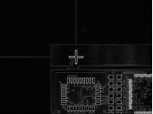
1、Liên kết chuỗi tham số
2、Thiết lập thuộc tính
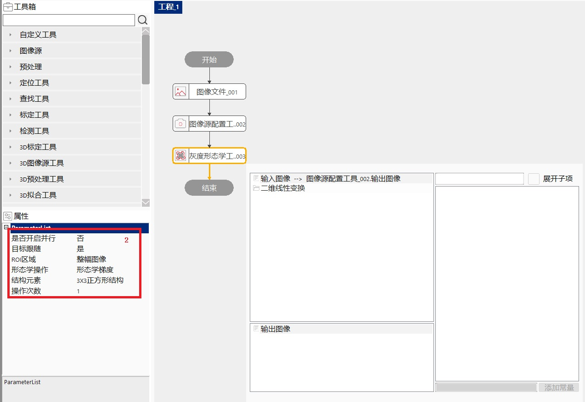
!Trong các phép toán hình thái học mức xám, phần tử cấu trúc tương đương với bộ lọc trong lọc ảnh, ngoài các phần tử cấu trúc định nghĩa sẵn như Hình 2, công cụ cũng hỗ trợ tính toán phần tử cấu trúc N×M, trong đó phạm vi lớn nhất của lọc trung vị là 99×99.
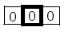
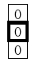
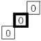
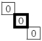
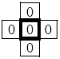
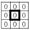
Khi chọn phép toán hình thái học là lọc trung vị, tham số phần tử cấu trúc sẽ mất hiệu lực.
| Tên tham số | Mô tả tham số |
|---|---|
| Có bật song song hay không | Có: bật tối ưu song song; Không: không bật tối ưu song song |
| Theo dõi mục tiêu | Có: có thể liên kết biến đổi tuyến tính 2D; Không: thực thi công cụ theo vùng ROI được liên kết vào |
| Vùng ROI | Vùng thực thi kiểm tra của công cụ, chia thành 10 loại: toàn bộ ảnh, ROI hình chữ nhật, ROI hình chữ nhật affine, ROI hình tròn, ROI vòng tròn（đoạn）, ROI hình elip, ROI đa giác, ROI đường gấp khúc biến đổi, ROI hình dạng tự do và ROI đa vùng. |
| Phép toán hình thái học | Các phép toán hình thái học được công cụ hình thái học mức xám hỗ trợ chia thành 8 loại: giãn nở mức xám, co xói mức xám, mở mức xám, đóng mức xám, biến đổi Top-Hat trắng, biến đổi Top-Hat đen, gradient hình thái học, lọc trung vị. |
| Phần tử cấu trúc | Có hình thái nhất định, dùng để đo lường và trích xuất hình dạng tương ứng trong ảnh nhằm phân tích và nhận dạng các đặc trưng cấu trúc của ảnh. Khi loại phần tử được chọn là hình tròn có bán kính r, các tham số như bán kính r và nhị phân hóa ảnh đầu vào sẽ được hiển thị. |
| Số lần thao tác | Số lần thực hiện xử lý hình thái học mức xám trên ảnh đầu vào, đồng thời sử dụng ảnh kết quả của lần trước làm ảnh đầu vào cho lần tiếp theo. |
| Ảnh đầu vào | Ảnh cần xử lý đầu vào. |
| Tên tham số | Mô tả tham số |
|---|---|
| Ảnh đầu vào | Chiều rộng, chiều cao, kích thước pixel của ảnh đầu vào. |
| Ảnh đầu ra | Chiều rộng, chiều cao, kích thước pixel của ảnh đầu ra. |
| Kết quả thực thi | Kết quả thực thi của công cụ. |
| Thời gian thực thi | Thời gian thực thi của công cụ. |
参见“\Samples\灰度形态学工具.gvp”。